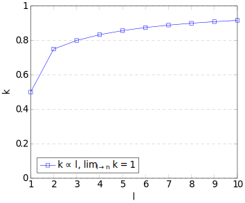

1.6 KP e algoritmi greedy/approssimazione
Sviluppare una panoramica di algoritmi greedy relativi al problema dello zaino, propedeutica a parlare di Relative performance guarantee e tightness.
Le versioni naive degli algoritmi per l'approssimazione di KP hanno come ipotesi quella di avere gli elementi ordinati in base a $\frac{profitto}{peso}$ decrescente.
Algoritmo greedy-split
Variante in cui l'algoritmo si ferma all'elemento di split, ovvero il primo oggetto per cui non c'è abbastanza spazio nello zaino.
Algoritmo greedy
L'elemento viene inserito se il suo peso sommato al peso corrente non eccede in capacità.
Se non riesce, scarta l'elemento.
Algoritmo extended-greedy
Esegue l'algoritmo greedy.
Al termine, se l'elemento di profitto massimo è maggiore della soluzione ottenuta, sostituisce il contenuto dello zaino con il solo elemento di massimo profitto.
LKP - rilassamento lineare
LKP produce una risposta ottimale in quanto procede come greedy-split e termina inserendo nello zaino la frazione dell'elemento di split necessaria per il riempimento.
Gerarchia delle approssimazioni
$$z^{G-split} \leq z^{G} \leq z^* \leq \lfloor z^{LKP}\rfloor\leq$$
$$z^{LKP} \leq z^{G-split} + p_{split} \leq z^{G} + p_{split}$$
Relative Performance Guarantee
Definita come $\frac{z^G(T)}{z^*_P(T)}$,
fornisce una garanzia delle prestazioni.
$k$-approssimazioni
Dato un algoritmo $G$, esso è una $k$-approssimazione, $0 \leq k \leq 1$, se non esiste un'istanza $I$ del problema $P$ tale che $\frac{z^G(I)}{Z^*_P(I)} < k$.
Se esiste un'istanza per cui $\frac{z^G(I)}{Z^*_P(I)} = k$ l'algoritmo è definito Tight.
Intuitivamente si può immaginare che, considerando più elementi dello zaino contemporaneamente, gli algoritmi greedy forniscono un'approssimazione sempre migliore della soluzione ottima.
Schema di approssimazione
Si considerano $l$ elementi ($l = \frac{1}{\epsilon} - 2$)
L'insieme di $l$ elementi $L^*$ corrisponde al sottoinsieme enumerato, che per definizione assumerà il valore ottimo.
- $S$ è il problema restante dopo aver inserito $L^*$
- $z_S^* = OPT(S)$
- $z_S^{EG}$ è il risultato di extended-greedy su $S$.
Caso 1. $\sum_{j \in L^*}p_j \geq \frac{l}{l+2}z^*$
$$z^A \geq \sum_{j \in L^*}p_j + z_S^{EG} \geq \sum_{j \in L^*}p_j + \frac{1}{2}z_S^*$$
$$z^A \geq \frac{1}{2}(z^* + \frac{l}{l+2}z^*) = \frac{l+1}{l+2}z^*$$
Caso 2. $\sum_{j \in L^*}p_j < \frac{l}{l+2}z^*$
$$z^* \leq \sum_{j \in L^*}p_j + z_S^{EG} + \frac{1}{l+2}z^* \leq z^A + \frac{1}{l+2}z^*$$
$$z^A \geq \frac{l+1}{l+2}z^*$$
In entrambi i casi si ottiene l'equazione $z^A \geq \frac{l+1}{l+2}z^*$
Che per definizione su $l$ diventa:
$$z^A \geq \frac{l+1}{l+2}z^* \geq \frac{\frac{1}{\epsilon}-1}{\frac{1}{\epsilon}}z^* = (1-\epsilon)z^*$$
Avendo dimostrato il crescente aumento della Relative Performance Guarantee, è possibile bilanciare la qualità della peggiore soluzione che si è disposti ad ottenere con il costo computazionale necessario per calcolarla.
